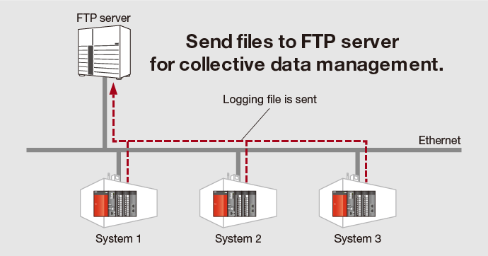

Data logging function
Q03UDV, Q04UDV, Q06UDV, Q13UDV, Q26UDV
User-friendly
Easy logging without a program
Save collected data in CSV format on an SD memory card just by completing easy settings with the dedicated setting tool wizard. Various reference materials including daily reports, form creation and general reports can be created easily within the saved CSV file. This data can be used for a wide variety of applications requiring traceability, production data, etc.
■ Setting with Wizard screen
Logging of control data variances
Data is collected during each scan or within millisecond intervals allowing detection of control deviation even at very high speeds. Therefore, identification of errors can be conducted faster and in more detail.
■ Generic sample data from a computer or external device at 100 ms intervals
■ Q Series CPU data logging function is capable of sampling data at much higher intervals as to detect fast changing values.
Automatic logging just by using an SD memory card
Automatic data logging realized just by inserting the SD memory card into the CPU, which is achieved as the memory card includes the logging configuration file. Instructing data logging remotely is also realized just by sending the configuration file by e-mail and copying onto the SD memory card.
Automatically send logging files to FTP server
Data logging files stored on the SD memory card can be sent to FTP server just by making a simple setting with the Logging configuration tool.
As the logging server can handle multiple files, management and maintenance tasks can be reduced.
File transfer feature

Quick troubleshooting response
Error causes and solutions can be quickly done as only the required data related to the problem is extracted, without having to spend time on filtering large volumes of diagnostic data.
“GX LogViewer*1” and “Logging configuration tool*2” available for free
To obtain a copy of GX LogViewer and Logging configuration tool, please contact your local Mitsubishi Electric representative.
- *1.For details of GX LogViewer, please click here.
- *2.The logging configuration tool is enclosed with GX Works2.
CPU modules with Built-in Ethernet Port
Q03UDV, Q04UDV, Q06UDV, Q13UDV, Q26UDV
Q03UDE, Q04UDEH, Q06UDEH, Q10UDEH, Q13UDEH, Q20UDEH, Q26UDEH, Q50UDEH, Q100UDEH
User-friendly
Easily connect to CPUs via Ethernet
IP address settings are not required to connect to CPU modules directly (one-to-one connection) using GX Works2 or GX Developer. Both straight and cross cables can be used, and are automatically identified by the CPU module. Therefore this connection method is as easy as using USB. Even operators who are not familiar with network settings can easily establish a connection.
CC-Link IE Field Network Basic does not require network module
Programmable controller CPUs with an embedded Ethernet port can be used as a master station*1, eliminating the need for an additional network module. The network can be configured with a minimum number of modules reducing space and hardware cost.
- *1.Only supported by High-speed Universal model QCPU and Universal model process CPU.
- *2.SLMP:Seamless Message Protocol
<span>Easily connect to BACnet<sup class="vis">®</sup> and MODBUS<sup class="vis">®</sup>/TCP</span>
Ethernet realizes a high-speed connection, such as communication with external devices.
By using predefined protocol support function*3, various devices that require open network protocol support, such as BACnet® and MODBUS®/TCP are supported.
- *3.Only supported by High-speed Universal model QCPU and Universal model process CPU.
Seamless communication across all layers
The Universal model QCPUs support a multitude of networking technologies including the high-speed, high-capacity CC-Link IE Controller Network and CC-Link IE Field Network. Along with MELSECNET/H, Ethernet, and CC-Link, these networks may be accessed seamlessly beyond network type or hierarchy. Each programmable controller on the network can be accessed for programming and maintenance duties by using a personal computer with the appropriate engineering tools connected via Ethernet.
Accurate clock data
The CPU module's clock is automatically corrected with the SNTP*4 clock synchronization function. When CPU clock data is reliably synchronized between systems, any time-stamped events or errors that involve more than one CPU can be easily understood in terms of their order of occurrence and relationship.
- *4.SNTP Simple Network Time Protocol
Program-less device data transfer
Simple PLC communication function*5
Using the programming tool, a simple parameter setting is all that is needed to transfer device data such as production information with no programming required.
This function makes it possible to easily establish communications not only with Q Series, but also MELSEC iQ-R Series, iQ-F Series, L Series and QnA/A Series controllers.
- *5.QnUDVCPU or QnUDPVCPU module whose first five serial number digits is “20042” or later is required.
■ Simple PLC Communication Setting
- *6.Built-in Ethernet port CPU is supported.
- *7.CPU module and Ethernet interface module are supported.
Sampling trace function<sup>*8</sup>
The sampling trace function is a useful diagnostic tool for analyzing error data, and sequence of events for program debug, etc. It can help reduce the overall time required for startup and commissioning of equipment.
In the multiple CPU configuration it can help to determine the timing and transfer of data between CPU modules. Collected data can be easily analyzed within the programming software tool with differences in word device and bit device values conveniently shown in chart and graph form.
In addition, the results from sampling trace can be exported to GX LogViewer CSV file format for analysis within the software.
Sampling trace execution condition settings
Sampling Trace window: example results
- *8.Not supported by Q00UJ.
Debugging process
Universal model CPUs have the ability to use the “Executional conditioned device test” function, which automatically sets device values to user specified values at any step during program simulation. Traditionally, to simulate real I/O or other device value change, a separate program would need to be written to perform debugging. By using the “Executional conditioned device test” function, it is possible to debug even small portions of simple ladder programs without the need to modify the program or add rungs of ladder. Therefore, debugging can be completed faster and easier.
Device point assignment
Extended range of bit devices
Bit devices, internal relay (M) and link relay (B), can now be assigned up to 60K points each. Previous models are limited to 32K points.
The total number of device points remains the same, however greater flexibility of device utilization and programming is achieved.
File register extended setting: data registers and link registers*9
The number of Data Register (D) and Link Register (W) device points can be extended using standard ROM or a memory card. Previous models only allow the extension of File Register (R/ZR) device points. Using this setting, it is easy to create more data or link registers to accommodate program changes, etc.
- *9.Not supported by Q00UJ.